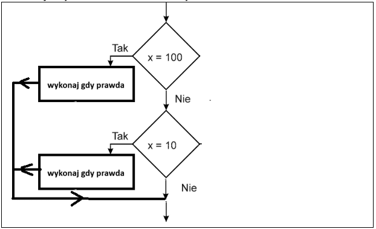
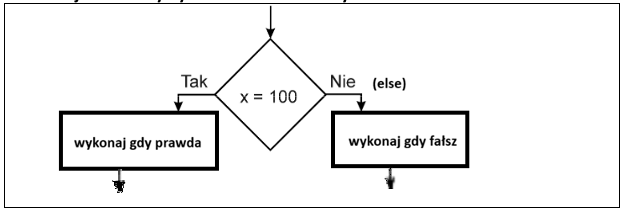

1) Instrukcja wyboru -> składania teoretyczna.
2) Instrukcja wyboru -> schemat blokowy.

3) Instrukcja alternatywy -> składania teoretyczna.
4) Instrukcja alternatywy -> schemat blokowy.

5) Operatory porównania.
Operator Opis Przykład
== jest równe 2==3 wynik = fałsz
!= nie jest równe 2!=3 wynik = prawda
> jest większe 25>3 wynik = prawda
< jest mniejsze 2<3 wynik = prawda
>= większe lub równe 25>=3 wynik = prawda
<= mniejsze lub równe 2<=3 wynik = prawda
6) Uwaga do operatorów porównania.
Należy odróżnić == ( dwa razy ) od = (jeden raz)
== ( dwa razy ) -> instrukcja PORÓWNANIA
= (jeden raz) -> instrukcja PRZYPISANIA np. a=5;
7) Operatory logiczne.